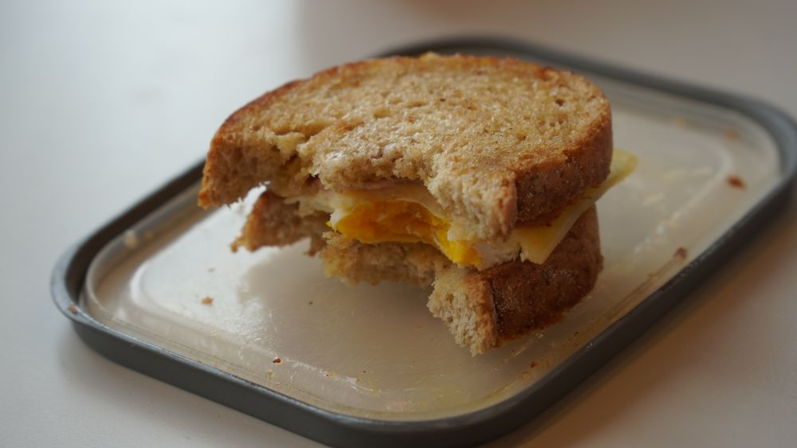
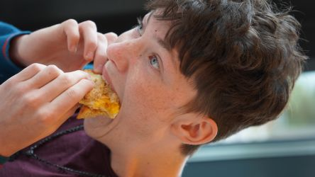

Peter sin toast
 Tilbake til oppskrifterIngredienser
- 2 skiver brød
- 2 skiver ost
- 2 skiver skinke
- Smør til steking
- Mils Majones
- 1 Egg
- Salt
- Chillikrydder
Fremgangsmåte
- Steik egget i ei panna.
- Steik skinka i ei panna.
- Steik toastene i ei panna til den er god og brun.
- Fjern toastene og smør med med Mils Majones.
- Varm opp egg og skinka igjen i panna.
- Legg egg, ost og skinka til brød og mos det hardt for å sørge for at det sitter fast.
